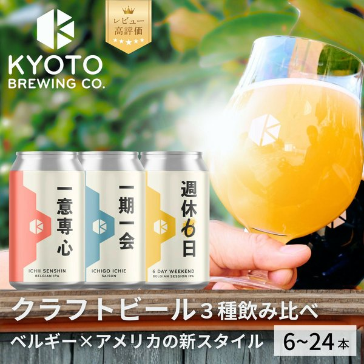
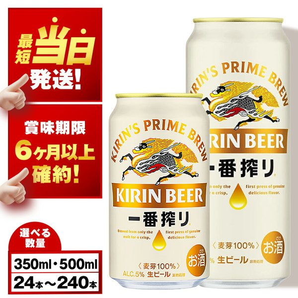
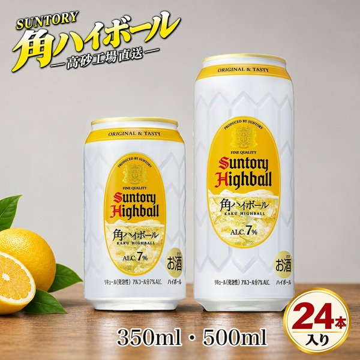
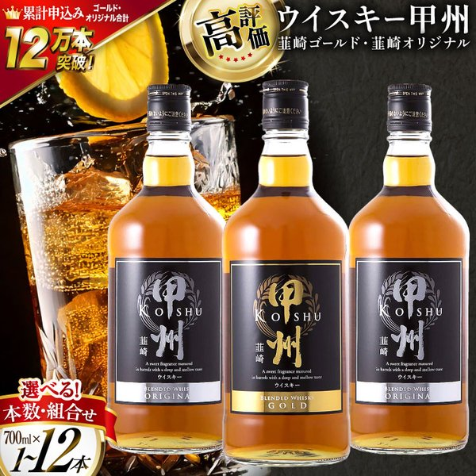
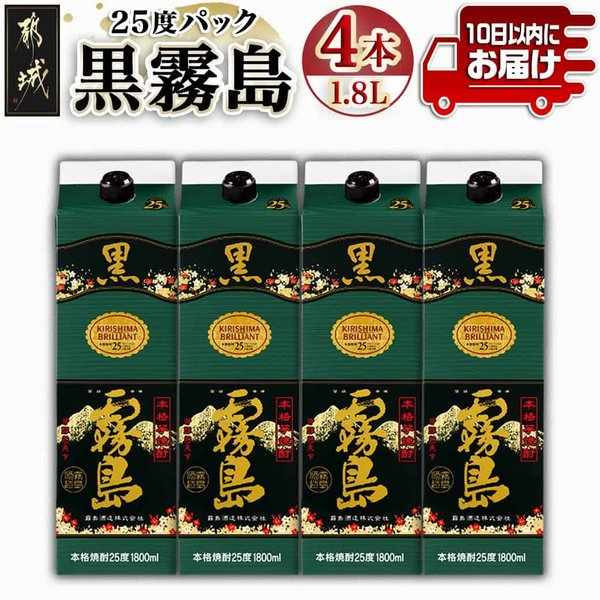
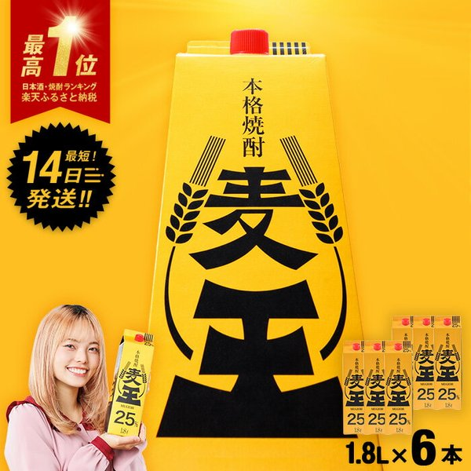
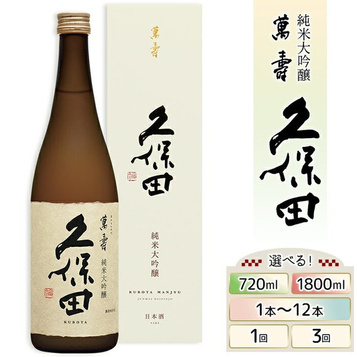
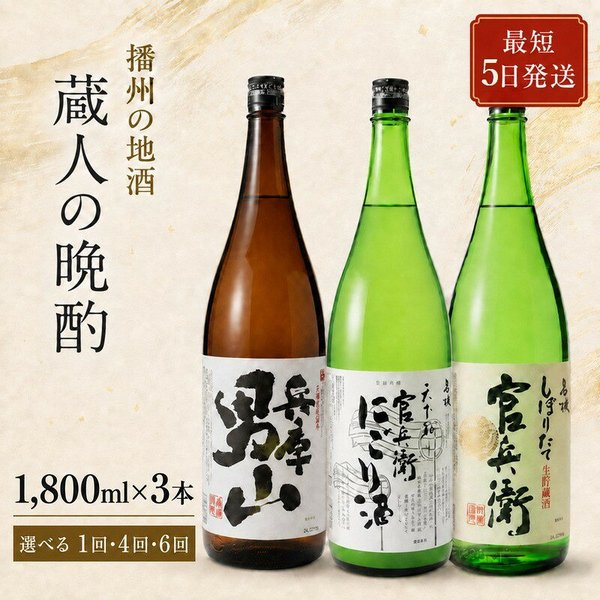
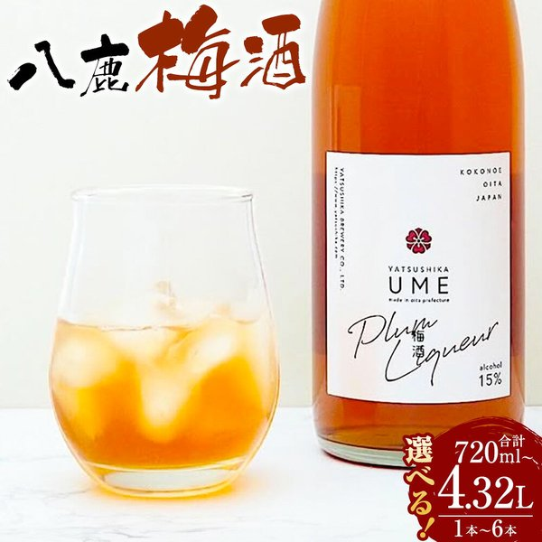
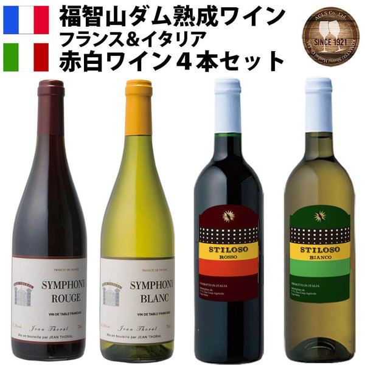

【2026年ふるさと納税】年末の宅飲み・忘年会が贅沢に！クラフトビール・ハイボール・焼酎＆日本酒の人気返礼品おすすめ10選
忘年会や年末の宅飲みは、飲む量が増えるわりに予算は限られます。そこで効くのが、ふるさと納税の返礼品でお酒を確保しておくことです。12月の酒代を、先に寄附へ振り替える形になります。
選ぶ軸は3つ。ふだん買う銘柄か、飲み比べができるセットか、そして常温で長く置けるかです。ビールは24本単位のケース、焼酎は1.8Lパック、日本酒は一升瓶が、1本あたりの単価を下げやすい形になります。返礼品は寄附額の3割以下と決まっているので、同じ寄附額なら本数と容量、そして送料込みの総額で比べるのが確実です。自己負担は2,000円で、申し込みは自治体ごとに必要になります。日本酒とワインは箱で届くため、寝かせる場所を先に決めておくと安心です。
本記事では、楽天市場で人気・高評価の宅飲み向けお酒の返礼品10選を、寄附額とレビュー評価つきで写真付き紹介します。
- おすすめ10選 スペック・特徴比較表
- BEST 1｜京都醸造 クラフトビール 定番3種 飲み比べ 350ml×6本〜24本
- BEST 2｜キリン一番搾り生ビール 千歳工場産 350ml・500ml 1〜10ケース（1ケース24本）
- BEST 3｜サントリー 角ハイボール缶 350ml・500ml 24本 1ケース
- BEST 4｜甲州韮崎 ウイスキー 飲み比べ 700ml 3本・9本・12本（選べる定期便）
- BEST 5｜霧島酒造 黒霧島パック 25度 1.8L×4本
- BEST 6｜麦王パック 本格麦焼酎 1.8L×6本（お届け回数が選べる）
- BEST 7｜久保田 萬寿 純米大吟醸 720ml・1800ml（四合瓶・一升瓶）
- BEST 8｜蔵人の晩酌 日本酒 飲み比べ 一升瓶1800ml×3本
- BEST 9｜八鹿梅酒 720ml〜4.32L（容量・本数を選べるセット）
- BEST 10｜福智山ダム熟成ワイン 赤白ワイン 4本詰め合わせ
- 【読者負担0円】買わなくても得する無料サービス
- まとめ：宅飲み向けお酒の返礼品10選の選び方
| 順位 | 商品名 | ブランド | 最大の特徴・おすすめ理由 | 総合評価 |
|---|---|---|---|---|
| BEST 1 | 京都醸造 クラフトビール 定番3種 飲み比べ 350ml×6本〜24本 | 京都醸造（京都府） | ベルギー×アメリカ系の3種を飲み比べ | 4.74 |
| BEST 2 | キリン一番搾り生ビール 千歳工場産 350ml・500ml 1〜10ケース（1ケース24本） | 北海道千歳市 | 1ケース24本から選べる | 4.79 |
| BEST 3 | サントリー 角ハイボール缶 350ml・500ml 24本 1ケース | 兵庫県高砂市 | 開けてそのまま飲める7%のハイボール | 4.83 |
| BEST 4 | 甲州韮崎 ウイスキー 飲み比べ 700ml 3本・9本・12本（選べる定期便） | 山梨県韮崎市 | 700mlボトルの飲み比べ | 4.66 |
| BEST 5 | 霧島酒造 黒霧島パック 25度 1.8L×4本 | 宮崎県都城市（霧島酒造） | 1.8Lパック×4本で単価が安い | 4.93 |
| BEST 6 | 麦王パック 本格麦焼酎 1.8L×6本（お届け回数が選べる） | 鹿児島県曽於市 | 計10.8Lの大容量 | 4.82 |
| BEST 7 | 久保田 萬寿 純米大吟醸 720ml・1800ml（四合瓶・一升瓶） | 新潟県長岡市（朝日酒造） | 720ml・1800mlから選べる | 4.97 |
| BEST 8 | 蔵人の晩酌 日本酒 飲み比べ 一升瓶1800ml×3本 | 兵庫県姫路市（名城酒造） | 辛口・しぼりたて・にごり酒の3種 | 4.65 |
| BEST 9 | 八鹿梅酒 720ml〜4.32L（容量・本数を選べるセット） | 大分県九重町（八鹿酒造） | 720ml〜4.32Lまで選べる | 4.79 |
| BEST 10 | 福智山ダム熟成ワイン 赤白ワイン 4本詰め合わせ | 福岡県直方市 | 赤白4本の詰め合わせ | 4.52 |
京都醸造 クラフトビール 定番3種 飲み比べ 350ml×6本〜24本

京都のブルワリー、京都醸造の定番3種を詰めた飲み比べセット。ベルギー由来の酵母とアメリカ産ホップを合わせた、香り高く苦みの輪郭がはっきりした味わいです。350ml缶で6本から24本まで選べ、単品でも定期便でも受け取れます。1本あたりにすると市販のクラフトビールより安く、箱ごと冷蔵庫に入れておけば、週末の夜に1本ずつ開けられます。楽天市場での実売価格は約10,000円（2026年11月時点）。
- ベルギー×アメリカ系の3種を飲み比べ
- 6本〜24本から選べる
- レビュー81件・評価4.74
- クラフトビールは賞味期限が短めなので、届いた月のうちに飲み切る
キリン一番搾り生ビール 千歳工場産 350ml・500ml 1〜10ケース（1ケース24本）

北海道千歳市の返礼品で、千歳工場で造られた一番搾りを1ケース（24本）から10ケースまで選べます。訳あり品とありますが、中身は通常の一番搾りで、ラベルや外箱に傷や汚れがあるという意味です。350mlと500mlを選べるので、家で飲む量と冷蔵庫の広さに合わせて決められます。ビールは買い足すたびに値段が動くので、ケース単位で確保しておくと忘年会の幹事役でも慌てません。楽天市場での実売価格は約14,500円（2026年11月時点）。
- 1ケース24本から選べる
- 350ml・500mlを選べる
- レビュー1,339件・評価4.79
- 訳あり品のため、外箱やラベルに傷・汚れが付く場合がある
サントリー 角ハイボール缶 350ml・500ml 24本 1ケース

角瓶でおなじみのサントリー角ハイボールを24本まとめた返礼品。アルコール分7%で、缶を開けてそのまま飲めます。氷を入れたグラスに注ぐと角瓶の香ばしさが立ち、食事にも合わせやすい味です。24本あると、宅飲みの1杯目をこれで済ませられるので、ウイスキーのボトルを開ける手間が減ります。楽天市場での実売価格は約14,000円（2026年11月時点）。
- 開けてそのまま飲める7%のハイボール
- 350ml・500mlを選べる
- レビュー80件・評価4.83
- 缶のまま置くと場所を取るので、箱から出して冷蔵庫へ
甲州韮崎 ウイスキー 飲み比べ 700ml 3本・9本・12本（選べる定期便）

山梨県韮崎市の返礼品のウイスキー。700mlのボトルを3本から選べ、味の違うボトルを並べて飲み比べられます。ハイボールにもロックにも使える味付けで、ソーダを1本足しておけば宅飲みの選択肢が一気に増えます。定期便を選べば、忘年会と新年会をまたいで届けてもらえます。楽天市場での実売価格は約9,000円（2026年11月時点）。
- 700mlボトルの飲み比べ
- 3本〜12本から選べる
- レビュー366件・評価4.66
- 炭酸と氷を別に用意しておくと、届いた日に飲み頃になる
霧島酒造 黒霧島パック 25度 1.8L×4本

宮崎県都城市の返礼品で、霧島酒造の黒霧島パック1.8Lを4本まとめたセット。黒麹仕込みの芋焼酎で、ロックでもお湯割りでも味が崩れません。パックタイプは瓶より軽く、注ぎ口が付いているので、毎晩1杯ずつ注いでも手間がかかりません。4本あれば、忘年会の持ち寄りにも1本回せます。楽天市場での実売価格は約26,000円（2026年11月時点）。
- 1.8Lパック×4本で単価が安い
- お湯割り・ロックどちらも合う
- レビュー134件・評価4.93
- 開封後は冷暗所に置き、1ヶ月ほどで飲み切る
麦王パック 本格麦焼酎 1.8L×6本（お届け回数が選べる）

鹿児島県曽於市の返礼品の本格麦焼酎、麦王の1.8Lパック6本セット。麦焼酎は芋焼酎より香りが軽く、食事の邪魔をしないので、毎晩の晩酌に向いています。6本で計10.8Lあり、1日1合なら3ヶ月ほどもちます。お届け回数を1回・3回・6回から選べるので、置き場所が少ない家庭でも受け取りやすいです。楽天市場での実売価格は約16,000円（2026年11月時点）。
- 計10.8Lの大容量
- お届け回数を選べる
- レビュー736件・評価4.82
- 6本まとめて届く回は、収納場所を空けてから注文する
久保田 萬寿 純米大吟醸 720ml・1800ml（四合瓶・一升瓶）

新潟県長岡市の返礼品で、朝日酒造の久保田 萬寿を選べます。淡麗でありながら米の旨みが残る純米大吟醸で、冷酒でも常温でも輪郭が崩れません。720mlの四合瓶と1.8Lの一升瓶から選べ、本数も1本・2本・3本と選べます。年末の食卓に1本あると、日本酒が得意でない人でも飲みやすい味です。楽天市場での実売価格は約19,000円（2026年11月時点）。
- 720ml・1800mlから選べる
- 淡麗で食事に合わせやすい
- 評価4.97の高評価
- レビューは37件とまだ少なく、口コミはこれから増える段階
蔵人の晩酌 日本酒 飲み比べ 一升瓶1800ml×3本

兵庫県姫路市の名城酒造が、辛口・しぼりたて・にごり酒の3種を一升瓶で詰めた飲み比べセット。同じ蔵の酒でも、辛口は食中酒、にごりは食後の一杯と役割が分かれます。1.8L×3本は合計5.4Lで、来客のある年末でも量に困りません。化粧箱入りなので、帰省の手土産にもそのまま使えます。楽天市場での実売価格は約16,000円（2026年11月時点）。
- 辛口・しぼりたて・にごり酒の3種
- 一升瓶3本の飲み比べ
- レビュー55件・評価4.65
- にごり酒は沈殿するので、開ける前にゆっくり転がして混ぜる
八鹿梅酒 720ml〜4.32L（容量・本数を選べるセット）

大分県九重町の八鹿酒造の梅酒。熟成させた梅のエキスが濃く、ロックでもソーダ割りでも味が薄まりません。720mlの1本から、合計4.32Lの6本セットまで選べ、甘さは梅由来で後味はすっきりしています。甘いお酒が苦手な人でも、ソーダで割れば食前酒として飲めます。楽天市場での実売価格は約8,000円（2026年11月時点）。
- 720ml〜4.32Lまで選べる
- 熟成梅酒で味が濃い
- レビュー71件・評価4.79
- 甘みがあるので、飲む量は1日1杯ほどに決めておく
福智山ダム熟成ワイン 赤白ワイン 4本詰め合わせ

福岡県直方市の返礼品で、福智山ダムの貯水池で熟成させた赤・白ワインの4本セット。フランスとイタリアのワインを、温度が一定のダムの環境で寝かせています。赤は肉料理、白は魚やチーズに合わせやすく、4本あると忘年会とクリスマスで2本ずつ使えます。日本ワインが苦手でも飲みやすい、辛口中心の構成です。楽天市場での実売価格は約14,000円（2026年11月時点）。
- 赤白4本の詰め合わせ
- ダム熟成で温度変化が少ない
- レビュー52件・評価4.52
- ワインは温度変化を避けたいので、届いたら冷暗所に寝かせる
この記事の商品を買う前に、まずは無料で得する選択肢をチェック。どれも登録・利用は0円で、無料期間中に解約すれば料金はかかりません。読みたい雑誌がある人、ポイントを貯めたい人、アンケートなら気軽という人、それぞれに合うものを選べます。
初回31日無料・無料期間中に解約すれば0円 → 楽天ポイントモール｜登録無料で毎日ポイ活
買い物なしでもポイントが貯まる無料サービス → 楽天インサイト｜アンケートに答えてポイント
登録無料・すきま時間のアンケートで貯まる → 楽天カード｜年会費永年無料
新規発行・年会費ずっと0円 →
4つのサービスの違いと使い分けは「出費0円で得する！買わずにポイントが貯まる無料サービス厳選4選」でまとめています。
💡 まとめ：宅飲み向けお酒の返礼品10選の選び方
お酒の返礼品は、ふだん買っているものを選ぶのがいちばん失敗しません。ビールは24本のケース、焼酎は1.8Lパック、日本酒は一升瓶か四合瓶と、家庭で消費するペースに合う形を選ぶと、1本あたりの値段が下がります。飲み比べセットは、忘年会で銘柄の話をしたい人に向いています。ウィスキーとハイボールは炭酸と氷を、ワインと梅酒は冷やしておく場所を、届く前に用意しておくと、その日のうちに楽しめます。寄附する前に、1ヶ月にどのお酒を何本飲むかを書き出してみると、迷わずに選べます。
楽天市場では「5と0のつく日」や「お買い物マラソン」などのキャンペーンに合わせて購入すると、ポイント還元が最大化してお得に手に入ります。ぜひチェックしてみてくださいね。